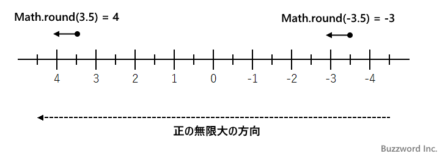
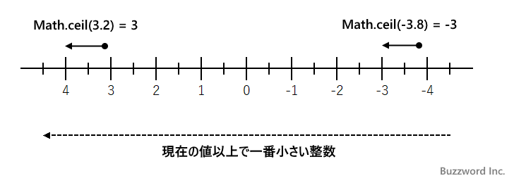
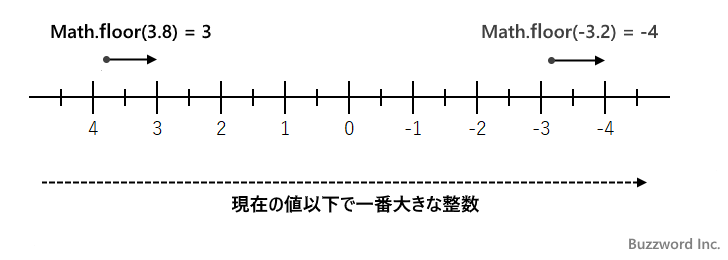

小数点以下を四捨五入/切り上げ/切り捨てする(Math.round, Math.ceil, Math.floor)
Math オブジェクトの静的メソッドである Math.round は対象の値の小数点以下を四捨五入します。 Math.ceil は対象の値の小数点以下を切り上げます。 Math.floor は対象の値の小数点以下を切り捨てます。ここでは Math オブジェクトの Math.round メソッド、 Math.ceil メソッド、そして Math.floor メソッドの使い方について解説します。
※ 小数点以下を削除する場合は「小数点以下を削除し整数を取得する(Math.trunc)」を参照されてください。
小数点以下を四捨五入する(round)
Math オブジェクトの Math.round メソッドは対象の値の小数点以下を四捨五入した値を取得します。書式は次の通りです。
Math.round(数値)
引数に指定した数値の小数点以下を四捨五入した値を返します。引数が数値ではなかった場合は数値に変換してから小数点以下を四捨五入した値を取得します。
Math.round メソッドによる四捨五入は、対象の値が正の数で小数部分が 0.5 より大きい場合は 1 つ大きい整数へ切り上げとなり、小数部分が 0.5 より小さい場合は 1 つ小さな整数へ切り下げられます。そして小数部分が 0.5 の場合は正の無限大のほうへ丸められます。
また対象の値が負の数で小数部分が -0.5 より大きい場合(例えば -0.4 など)は 1 つ大きい整数へ切り上げとなり、小数部分が -0.5 より小さい場合(例えば -0.6 など)は 1 つ小さな整数へ切り下げられます。そして小数部分が -0.5 の場合は正の無限大のほうへ丸められます。
次のサンプルをみてください。対象の値が正の値の場合です。
Math.round(3.4); >> 3 Math.round(3.5); >> 4 Math.round(3.6); >> 4
3.4 は切り捨てられ 3 に、 3.6 は切り上げられて 4 となります。そして 3.5 は正の無限大の方向へ切り上げられて 4 となります。
次は対象の値が負の値の場合です。
Math.round(-3.6); >> -4 Math.round(-3.5); >> -3 Math.round(-3.4); >> -3
-3.6 は切り上げられ -4 に、 -3.4 は切り捨てられて -3 となります。そして -3.5 は正の無限大の方向へ切り上げられて -3 となります。
3.5 や -3.5 のように小数点が 0.5 の場合は次の図のように正の無限大の方向へ丸められます。特に負の -3.5 のような値が -4 ではなく -3 となる点に注意してください。

引数に数値ではない値を指定した場合は、数値に変換された上で小数点以下を四捨五入した値を取得します。次のサンプルをみてください。
Math.round('12.75');
>> 13
Math.round([-4.445]);
>> -4
Math.round(null);
>> 0
Math.round(undefined);
>> NaN
Math.round(NaN);
>> NaN
小数点以下を切り上げる(ceil)
Math オブジェクトの Math.ceil メソッドは対象の値の小数点以下を切り上げた値を取得します。書式は次の通りです。
Math.ceil(数値)
引数に指定した数値の小数点以下を切り上げた値を返します。引数が数値ではなかった場合は数値に変換してから小数点以下を切り上げた値を取得します。
Math.ceil メソッドによる切り上げとは、対象の値以上の一番小さな整数にすることです。 3.2 や 3.8 はどちらも 4 に、 -3.2 や -3.8 はどちらも -3 にします。

次のサンプルをみてください。対象の値が正の値の場合です。
Math.ceil(3.2); >> 4 Math.ceil(3.8); >> 4 Math.ceil(3); >> 3
3.2 や 3.8 はどちらも切り上げられて 4 となります。 3 のように整数の値は変わりがありません。
次は対象の値が負の値の場合です。
Math.ceil(-3.2); >> -3 Math.ceil(-3.8); >> -3 Math.ceil(-3); >> -3
-3.2 や -3.8 はどちらも切り上げられて 3 となります。 -3 のように整数の値は変わりがありません。
引数に数値ではない値を指定した場合は、数値に変換された上で小数点以下を切り上げた値を取得します。次のサンプルをみてください。
Math.ceil('12.75');
>> 13
Math.ceil([-4.445]);
>> -4
Math.ceil(null);
>> 0
Math.ceil(undefined);
>> NaN
Math.ceil(NaN);
>> NaN
小数点以下を切り捨てる(floor)
Math オブジェクトの Math.floor メソッドは対象の値の小数点以下を切り捨てた値を取得します。書式は次の通りです。
Math.floor(数値)
引数に指定した数値の小数点以下を切り捨てた値を返します。引数が数値ではなかった場合は数値に変換してから小数点以下を切り捨てた値を取得します。
Math.floor メソッドによる切り捨てとは、対象の値以下の一番大きな整数にすることです。 3.2 や 3.8 はどちらも 3 に、 -3.2 や -3.8 はどちらも -4 にします。

次のサンプルをみてください。対象の値が正の値の場合です。
Math.floor(3.2); >> 3 Math.floor(3.8); >> 3 Math.floor(3); >> 3
3.2 や 3.8 はどちらも切り捨てられて 3 となります。 3 のように整数の値は変わりがありません。
次は対象の値が負の値の場合です。
Math.floor(-3.2); >> -4 Math.floor(-3.8); >> -4 Math.floor(-3); >> -3
-3.2 や -3.8 はどちらも切り上げられて 3 となります。 -3 のように整数の値は変わりがありません。
引数に数値ではない値を指定した場合は、数値に変換された上で小数点以下を切り捨てた値を取得します。次のサンプルをみてください。
Math.floor('12.75');
>> 12
Math.floor([-4.445]);
>> -5
Math.floor(null);
>> 0
Math.floor(undefined);
>> NaN
Math.floor(NaN);
>> NaN
-- --
Math オブジェクトの Math.round メソッド、 Math.ceil メソッド、そして Math.floor メソッドの使い方について解説しました。
( Written by Tatsuo Ikura )

著者 / TATSUO IKURA
初心者～中級者の方を対象としたプログラミング方法や開発環境の構築の解説を行うサイトの運営を行っています。